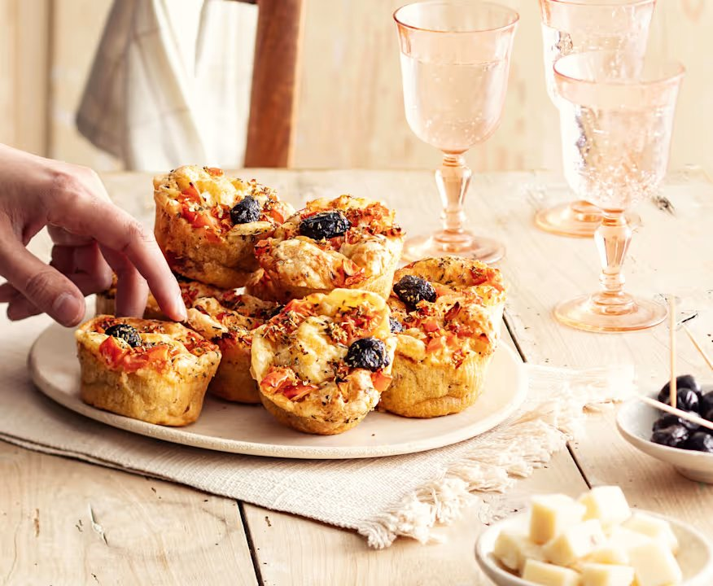

Muffins façon pizza
Ingredients
10×
- 100 g de gruyère
- 180 g de farine
- 1 sachet de levure chimique
- 3 oeufs
- 100 g de lait demi-écrémé
- 4 pincées de sel
- 3 pincées de poivre
- 100 g d'huile d'olive
- 150 g de jambon blanc
- 130 g de tomates
- herbes de Provence
- origan
- 10 olives noires dénoyautées
- salade verte

Préparation
Étape 1
Préchauffer le four à 180ºC. Disposer des moules à muffins sur une plaque.
Étape 2
Mettre 100 g de gruyère dans le bol et râper 15 sec/vitesse 5. En réserver la moitié.
Étape 3
Ajouter 180 g de farine, 1 sachet de levure chimique, 3 oeufs, 100 g de lait demi-écrémé, 4 pincées de sel, 3 pincées de poivre et 100 g d'huile d'olive. Mixer 15 sec/vitesse 5.
Étape 4
Ajouter 150 g de jambon blanc en morceaux et mélanger 5 sec/sens inverse/vitesse 3. Répartir dans les moules.
Étape 5
Garnir du gruyère réservé, de 130 g de tomates en dés, d’herbes de Provence et d’origan (optionnels), et d’une olive parmi 10 olives noires dénoyautées. Cuire 25min. Servir avec une salade verte.
Conseils
- Remplacer le jambon par une autre charcuterie.